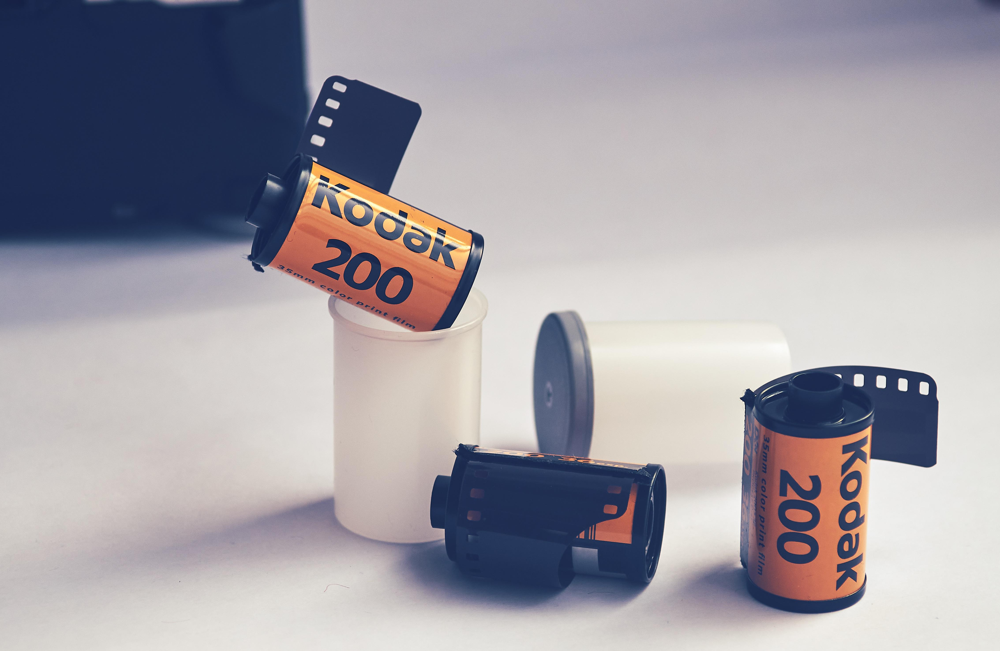

Located in the creative heart of Melbourne, WAI Films is more than just a processing lab; it is a dedicated sanctuary for the analog soul. We understand that every frame of film captures a unique moment in time, which is why we treat every roll with the utmost precision and artistic care. From high-quality C-41 developing and professional-grade scanning to providing a curated selection of fresh, expired, and cine film stocks, our mission is to keep the craft of film photography thriving. Whether you are a seasoned professional or a curious beginner exploring the streets of Melbourne, we invite you to trust us with your vision. At WAI Films, we don't just develop film—we bring your stories to life with the timeless texture and depth that only analog can provide.
